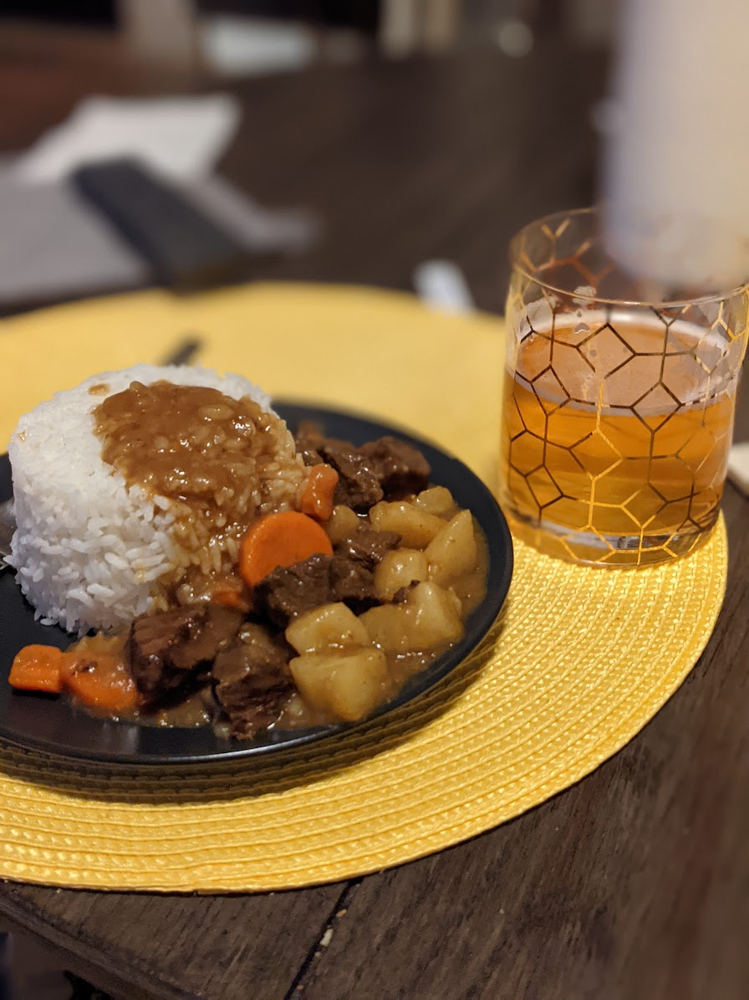

Japanese Beef Curry

Description
About
Ingredients
- 2 lbs chuck beef
- 1 onion
- 3 carrots
- 3 potatoes
- 1-2 bricks of mild or medium curry roux
Instructions
- Get a large pot, sear the beef and saute the onions
- Pour enough water to cover the meat and onions, add the roux and mix
- Cover and cook until the meat is tender, on medium heat it can take up to an hour
- Add potatoes and carrots, cook til everything is fork tender
- Serve over rice